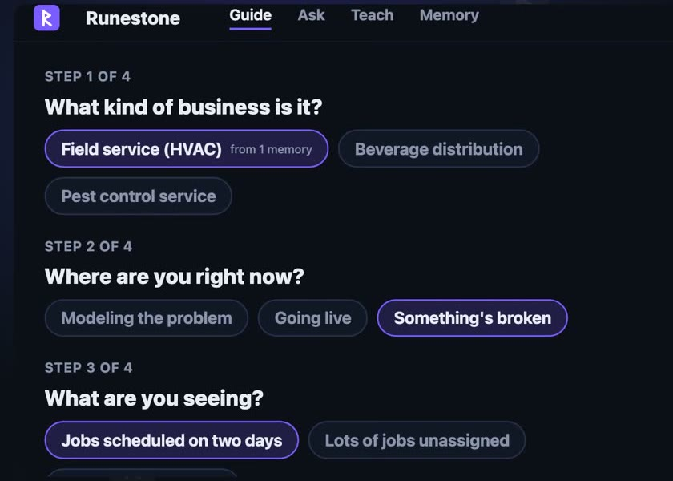
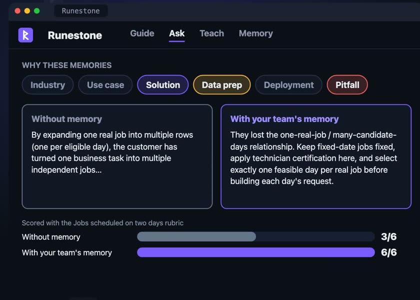
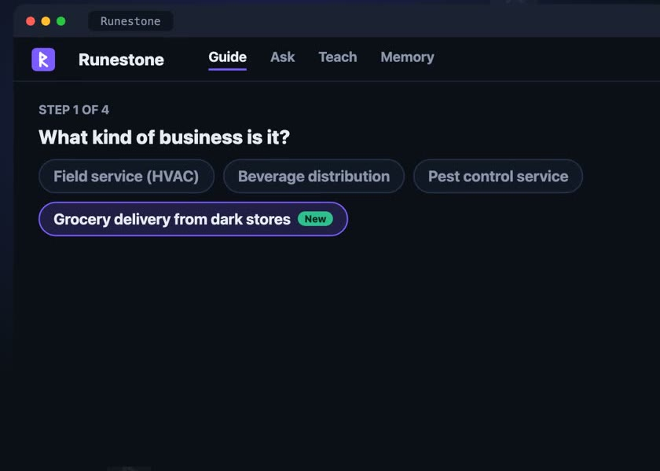
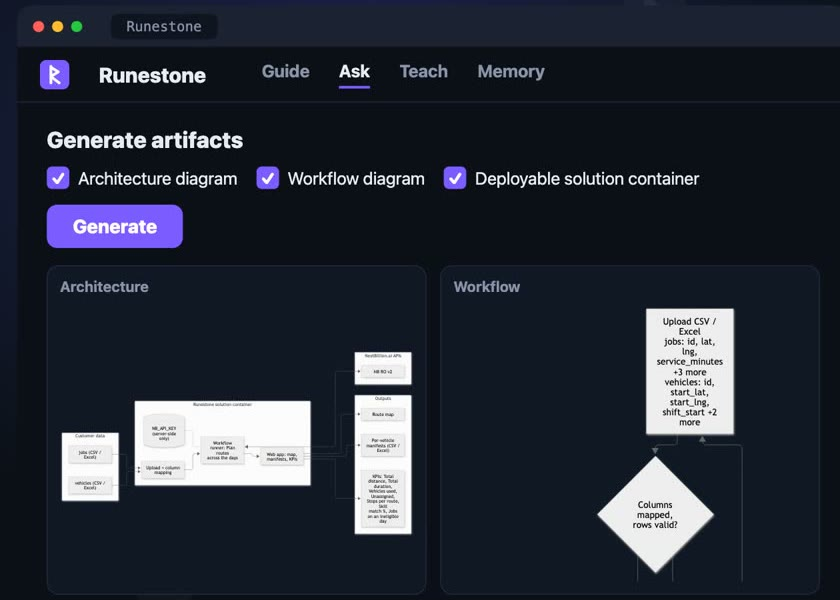
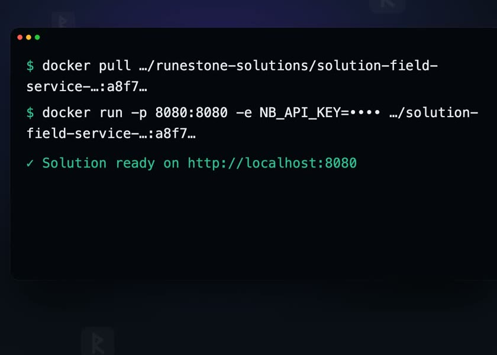
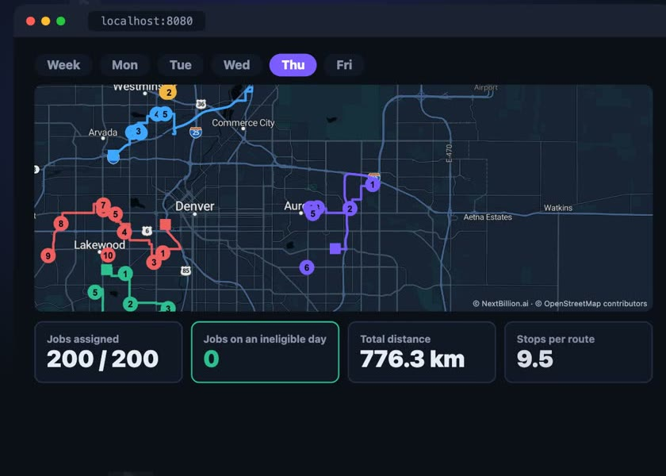

Your team's memory, turned into working solutions.
Runestone remembers what your team learned on every routing project. Ask it a question and it answers with that memory. Then it generates the diagrams and a deployable solution that runs on your customer's data.
The full walkthrough, from question to running solution. Fictional customer data.
How it works
From a question to a running solution.
Four tabs, one loop. The more projects your team teaches it, the better the next answer gets.
Guide
Not sure what to ask? Four clicks turn what you know into the right question.
Ask
Get an answer built from your team's memory, side by side with one without it.
Teach
Paste a project conversation. Runestone refines what it knows or learns something new.
Generate
Architecture and workflow diagrams, plus a solution container you can run.
Guide
Start from what you know.
Pick the kind of business, where you are in the project and what you're seeing. Every choice comes from what your team has already learned, and Runestone infers your role from the stage.
- No typing, about a minute
- Edit the composed question before you ask

Memory at work
See what your team's memory adds.
Every answer can run twice, with and without memory, and a judge scores both against the same checklist. On "jobs scheduled on two days", the answer with memory covered all six points; the one without covered three.
3 of 6 → 6 of 6On broad questions the two often tie. Memory pays off on the problems your team learned the hard way.

It learns
Teach it once. It's in the next answer.
Paste a project conversation into Teach. Runestone shows which memories it refines and which are new. The new business shows up in the Guide straight away, marked New.

Generate
Diagrams you can hand to the customer.
Turn an answer into an architecture diagram and a workflow diagram, ready to drop into a proposal. Add the solution container in the same step.

One key, one command
A solution you can actually run.
The generated container needs one NextBillion.ai key, which stays on the server. Pull it, run it, open it in the browser.
- Drag in a CSV or Excel file
- Clustering plus multi-day route optimization

Runs on your data
Routes, manifests and KPIs, day by day.
On a fictional HVAC week of 200 jobs, every job was assigned and none landed on a day it wasn't eligible for. That's exactly the bug the memory warned about.
200 / 200 assigned · 0 on an ineligible day · 776.3 km
Built on NextBillion.ai.
Route optimization, clustering and maps by NextBillion.ai. Runestone is an internal tool and isn't publicly available yet.